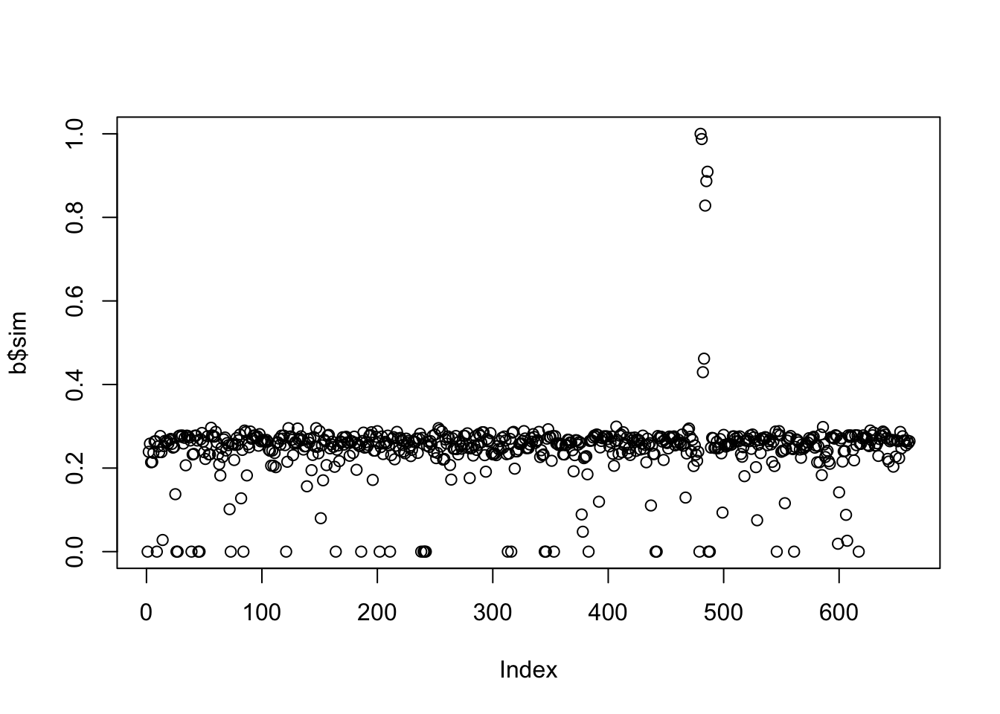

Chapter 4 Неделя 2, День 3
library(data.table)4.1 Введение в работу с текстом
Работа с текстом - это отдельная и сложная задача. И у R все необходимые инструменты для этого!
Всю работу со строками (и текстом в целом) можно условно поделить на три уровня:
- Базовые операции (до регулярных выражений)
- Регулярные выражения
- Natural language processing
Мы начнем с базовых операций. В R есть много функций для работы со строками. В принципе, их достаточно для того, чтобы делать весьма сложные вещи, но как и часто это бывает с R, есть дополнительные пакеты, которые не столько расширяют функционал, сколько делают нашу жизнь удобнее.
Основных таких пакета два: stringi и stringr. Давайте сразу их установим:
install.packages("stringi")
install.packages("stringr")library(stringi)
library(stringr)stringi - это базовый пакет, который имеет очень широкий функционал. Функции из этого пакета начинаются на stri_. stringr - это пакет, который является “оберткой” пакета stringi. Функции пакета stringr начинаются на str_. stringr - более “минималистичный”: в нем меньше функций, чем в stringi. А еще stringr - это часть tidyverse, но этот пакет вполне можно использовать и без tidyverse, например, работая в data.table.
Тем не менее, для более-менее продвинутой работы с текстом придется выучить специальный язык - “регулярные выражения” (regular expressions или просто regex). Регулярные выражения реализованы на многих языках, в том числе в R. Но мы пока обойдемся наиболее простыми функциями, которые покроют большую часть того, что нам нужно уметь делать при работе с текстом.
Ну а после освоения базовых возможностей и регулярных выражений можно кидаться в естественную обработку языка и делать всякие топик моделлинги и прочие сентимент анализы. Впрочем, можно туда запрыгивать сразу, но обладая базовым инструментарием работы со строковыми данными, все эти штуки делать будет гораздо проще и эффективнее. Итак, поехали.
4.2 Базовые операции с текстом
Строковые данные (character) - один из базовых типов данных в R.
Для того, чтобы создать строковую переменную нужно использовать кавычки. Можно одинарные:
'Всем привет!'## [1] "Всем привет!"Можно двойные:
"Всем привет!"## [1] "Всем привет!"Разницы никакой! Главное использовать один вид кавычек для одного значения вектора. И еще: если использовать один вид кавычек для задания значения переменной, то другой вид кавычек можно использовать “внутри”:
"Всем 'привет'!"## [1] "Всем 'привет'!"'Всем "привет"!'## [1] "Всем \"привет\"!"Пустую строку можно сделать с помощью функции character():
character(1)## [1] ""А вот это уже похоже на пассивную агрессию:
"С тобой все в порядке?"## [1] "С тобой все в порядке?"character(5)## [1] "" "" "" "" ""Конечно, можно превращать другие переменные в строки:
as.character(1:10)## [1] "1" "2" "3" "4" "5" "6" "7" "8" "9" "10"as.character(TRUE)## [1] "TRUE"4.2.1 Соединение и разъединение строк
Как соединить строки? Очевидным способом будет попробовать функцию c():
c("Всем", "Привет")## [1] "Всем" "Привет"И вроде бы это то, что нужно, но если посмотрите внимательно, то увидите, что оба слова выделены в кавычки. Короче говоря, мы просто соединили два значения в вектор (ну или два вектора длиной один в вектор длиной два).
Для того, чтобы соединить строковые значения, есть функция paste():
paste("Всем", "Привет")## [1] "Всем Привет"Вот это то, что нужно!
У функции paste() есть параметр sep = - разделитель, который по умолчанию является пробелом - sep = " ", но его можно поменять на любой другой, например:
paste("Всем", "Привет", sep = "хэй!")## [1] "Всемхэй!Привет"Обычно, правда, нам не нужно придумывать такие ухищренные разделители, а нужно, чтобы его вообще не было:
paste("Всем", "Привет", sep = "")## [1] "ВсемПривет"Есть функция paste0(), которая является оберткой над обычным paste(), но уже с sep = "" по умолчанию:
paste0("Всем", "Привет")## [1] "ВсемПривет"Теперь попробуем создать простой data.table с буквами. Буквы латиницы зашиты в R как константы:
let <- data.table(small = letters[1:10], big = LETTERS[1:10])
let## small big
## 1: a A
## 2: b B
## 3: c C
## 4: d D
## 5: e E
## 6: f F
## 7: g G
## 8: h H
## 9: i I
## 10: j JДавайте теперь попробуем создать колонку both, где объединим обе колонки с помощью какого-нибудь разделителя:
let[, both := paste(small, big, sep = "_")]
let## small big both
## 1: a A a_A
## 2: b B b_B
## 3: c C c_C
## 4: d D d_D
## 5: e E e_E
## 6: f F f_F
## 7: g G g_G
## 8: h H h_H
## 9: i I i_I
## 10: j J j_JАга! Если немного присмотреться, то можно заметить, что функция paste() “склеивает” несколько векторов и выдает на выходе вектор такой же длины. А вот чтобы соединить значения одного вектора в одно значение, нужно воспользоваться параметром collapse =:
let[, paste(small, big, sep = "+", collapse = " -> ")]## [1] "a+A -> b+B -> c+C -> d+D -> e+E -> f+F -> g+G -> h+H -> i+I -> j+J"Есть и более продвинутый способ соединения строк, который происходит еще из C и очень популярен в Python. Для этого есть функция sprintf(). Вот пример того, как это работает:
sprintf("Добро пожаловать в %s, на дворе %i год", "СИРИУС", year(Sys.Date()))## [1] "Добро пожаловать в СИРИУС, на дворе 2020 год"Это может быть удобно, если, например, Вы хотите в большую строчку вставить какую-то информацию из переменных.
Ну и наконец, самый продвинутый способ соединять строчки - это пакет glue. О да, для того, чтобы делать простые вещи очень просто нужно осваивать целый пакет! Но не беспокойтесь, у этого пакета очень интуитивно понятный синтаксис, который удобнее (на мой взгляд), чем sprintf():
install.packages("glue")library(glue)
let[, glue("{1:.N} буква латинского алфавита: {let$big}(заглавная) - {let$small}(строчная)")]## 1 буква латинского алфавита: A(заглавная) - a(строчная)
## 2 буква латинского алфавита: B(заглавная) - b(строчная)
## 3 буква латинского алфавита: C(заглавная) - c(строчная)
## 4 буква латинского алфавита: D(заглавная) - d(строчная)
## 5 буква латинского алфавита: E(заглавная) - e(строчная)
## 6 буква латинского алфавита: F(заглавная) - f(строчная)
## 7 буква латинского алфавита: G(заглавная) - g(строчная)
## 8 буква латинского алфавита: H(заглавная) - h(строчная)
## 9 буква латинского алфавита: I(заглавная) - i(строчная)
## 10 буква латинского алфавита: J(заглавная) - j(строчная)Теперь осталось научиться разъединять строковые значения. Для этого в пакете data.table есть функция tstrsplit()
let[, tstrsplit(both, "_")]## V1 V2
## 1: a A
## 2: b B
## 3: c C
## 4: d D
## 5: e E
## 6: f F
## 7: g G
## 8: h H
## 9: i I
## 10: j J4.2.2 Подсчет длины строк
Чтобы посчитать количество знаков, можно воспользоваться функцией nchar():
nchar(c("Всем", "привет"))## [1] 4 6В качестве самостоятельного задания загрузите датасет со всеми текстами песен Дэвида Боуи, взятых с сайта [Genius.com]:
b <- fread("data/bowie2.csv")
b## song_id song_name
## 1: 4193889 1917
## 2: 338950 1984
## 3: 1181295 1984/Dodo
## 4: 4131335 1984 (Live 1974)
## 5: 4178509 1984 (Live '74)
## ---
## 657: 4178274 Ziggy Stardust (Live 1972)
## 658: 4133052 Ziggy Stardust (Live 1973)
## 659: 4131908 Ziggy Stardust (Live 1978)
## 660: 2002305 Ziggy Stardust (Live '73) [Stereo]
## 661: 4128663 Ziggy Stardust (Live, Glastonbury, 2000)
## song_lyrics_url
## 1: https://genius.com/David-bowie-1917-lyrics
## 2: https://genius.com/David-bowie-1984-lyrics
## 3: https://genius.com/David-bowie-1984-dodo-lyrics
## 4: https://genius.com/David-bowie-1984-live-1974-lyrics
## 5: https://genius.com/David-bowie-1984-live-74-lyrics
## ---
## 657: https://genius.com/David-bowie-ziggy-stardust-live-1972-lyrics
## 658: https://genius.com/David-bowie-ziggy-stardust-live-1973-lyrics
## 659: https://genius.com/David-bowie-ziggy-stardust-live-1978-lyrics
## 660: https://genius.com/David-bowie-ziggy-stardust-live-73-stereo-lyrics
## 661: https://genius.com/David-bowie-ziggy-stardust-live-glastonbury-2000-lyrics
## annotation_count artist_id artist_name
## 1: 1 9534 David Bowie
## 2: 11 9534 David Bowie
## 3: 6 9534 David Bowie
## 4: 0 9534 David Bowie
## 5: 0 9534 David Bowie
## ---
## 657: 0 9534 David Bowie
## 658: 0 9534 David Bowie
## 659: 0 9534 David Bowie
## 660: 1 9534 David Bowie
## 661: 0 9534 David Bowie
## artist_url
## 1: https://genius.com/artists/David-bowie
## 2: https://genius.com/artists/David-bowie
## 3: https://genius.com/artists/David-bowie
## 4: https://genius.com/artists/David-bowie
## 5: https://genius.com/artists/David-bowie
## ---
## 657: https://genius.com/artists/David-bowie
## 658: https://genius.com/artists/David-bowie
## 659: https://genius.com/artists/David-bowie
## 660: https://genius.com/artists/David-bowie
## 661: https://genius.com/artists/David-bowie
## lyrics
## 1:
## 2: Someday they won't let you, now you must agree The times they are a-telling and the changing isn't free You've read it in the tea leaves, and the tracks are on TV Beware the savage jaw of 1984 They'll split your pretty cranium, and fill it full of air And tell that you're eighty, but brother, you won't care You'll be shooting up on anything, tomorrow's neverthere Beware the savage jaw of 1984 Come see, come see, remember me? We played out an all night movie role You said it would last, but I guess we enrolled In 1984 (who could ask for more) 1984 (who could ask for mor-or-or-or-ore) (Mor-or-or-or-ore) I'm looking for a vehicle, I'm looking for a ride I'm looking for a party, I'm looking for a side I'm looking for the treason that I knew in '65 Beware the savage jaw of 1984 Come see, come see, remember me? We played out an all night movie role You said it would last, but I guess we enrolled In 1984 (who could ask for more) 1984 (who could ask for mor-or-or-or-ore) (Mor-or-or-or-ore) 1984
## 3: Someday they won't let you, now you must agree The times they are a-telling, and the changing isn't free You've read it in the tea leaves, the tracks are on tv Beware the savage jaw Of 1984 They'll break your pretty cranium, and fill it full of air And tell you that you're eighty, but lover you won't care You'll be shooting up this huge world, like tomorrow's wasn't there Beware the savage jaw Of 1984 (come see, come see, remember me? ) We played out an all night movie role You said it would last, but I guess we've grown In 1984 (who could ask for more) 1984 (who could ask for more) Now we can talk in confidence Did you guess that we've been done wrong Lies jumped the queue to be first in line Such a shameless design He thinks he's well screened from the man at the top It's a shame that his children disagree They cooly decide to sell him down the line Daddy's brainwashing time He's a do do, no no didn't hear it from me He's a do do, no no didn't hear it from me She doesn't recall her blessed childhood out of yore When a unit was a figure not a she When lovers chose each other seems the perk's are due Another memo to screw She's a do do, no no didn't hear it from me She's a do do, no no didn't hear it from me Can you wipe your nose my child without them slotting in your file a photograph Will you sleep in fear tonight wake to find the scorching light of neighbour jim Come to, turn you in But the do do, no no, didn't hear it from me Another do do, no no, didn't hear it from me Another do do, no no, didn't hear it from me Another do do, no no, didn't hear from me Come see, come see, remember me? We played out an all night movie role You said it would last, but I guess we enrolled In 1984 (who could ask for more) 1984 (who could ask for mor-or-or-or-ore) (mor-or-or-or-ore) 198 4 1984 1984 (mor-or-or-or-ore) 1984 1984 (mor-or-or-or-ore) 1984 1984 (mor-or-or-or-ore)
## 4: Someday they won't let you So now you must agree The times they are a-telling And the changing isn't free You've read it in the tea leaves, and the tracks are on TV Beware the savage jaw of 1984 They'll split your pretty cranium, and fill it full of air And tell that you're eighty, but brother, you won't care You'll be shooting up on anything, tomorrow's never there Beware the savage jaw Of 1984 (Come see, come see, remember me?) We played out an all night movie role You said it would last, but I guess we enrolled In 1984 (Who could ask for more?) 1984 (Who could ask for mor-or-or-or-ore?) (Mor-or-or-or-ore) I'm looking for a vehicle, I'm looking for a ride I'm looking for a party, I'm looking for a side I'm looking for the reason that I knew in '65 Beware the savage jaw of 1984 (Come see, come see, remember me?) We played out an all night movie role You said it would last, but I guess we enrolled In 1984 (Who could ask for more?) 1984 (Who could ask for mor-or-or-or-ore?) (Mor-or-or-or-ore) 1984 (Who could ask for more?) 1984 (Who could ask for more?) 1984 (Who could ask for more?)
## 5: Someday they won't let you So now you must agree The times they are a-telling And the changing isn't free You've read it in the tea leaves, and the tracks are on TV Beware the savage jaw of 1984 They'll split your pretty cranium, and fill it full of air And tell that you're eighty, but brother, you won't care You'll be shooting up on anything, tomorrow's neverthere Beware the savage jaw of 1984 Come see, come see, remember me? We played out an all night movie role You said it would last, but I guess we enrolled In 1984 (Who could ask for more?) 1984 (Who could ask for...) (Mor-or-or-or-ore) I'm looking for a vehicle, I'm looking for a ride I'm looking for a party, I'm looking for a side I'm looking for the reason that I knew in '65 Beware the savage jaw of 1984 Come see, come see, remember me? We played out an all night movie role You said it would last, but I guess we enrolled In 1984 (Who could ask for more?) 1984 (Who could ask for mor-or-or-or-ore?) (Mor-or-or-or-ore) 1984 (Who could ask for mor-or-or-or-ore?) 1984 (Who could ask for mor-or-or-or-ore?) 1984 (Who could ask for mor-or-or-or-ore?) 1984 (Who could ask for more?)
## ---
## 657: Ooh yeah Uh! Now Ziggy played guitar Jamming good with Weird and Gilly And The Spiders from Mars And he played it left hand But he made it too far Became the special man Then we were Ziggy's Band Now Ziggy really sang Screwed up eyes and screwed down hairdo Like some cat from Japan Oh he could kill ’em by smiling He could leave 'em to hang He came on so loaded man Well hung, snow white tan So where were the spiders While the fly tried to break our balls? Just the beer light to guide us So we bitched about his fans And should we crush his sweet hands? Ziggy played for time Jiving us that we were Voodoo The kids was just crass He was the nazz With God-given ass He took it all too far But boy could he play guitar Making love with his ego Ziggy sucked up into his mind, ah Like a leper messiah When the kids had killed a man I had to break up the band Oh yeah Now Ziggy played guitar
## 658: Oh yeah Ah Now Ziggy played guitar Jamming good with Weird and Gilly And The Spiders from Mars Well he played it left hand But made it too far Became the special man Then we were Ziggy's Band Ziggy really sang Screwed up eyes and screwed down hairdo Like some cat from Japan Oh he could lick 'em by smiling He could leave 'em to hang Well he came on so loaded man Well hung, snow white tan So where were the spiders While the fly tried to break our balls? Just the beer light to guide us So we bitched about his fans And should we crush his sweet hands? Oh yeah! Ziggy played for time Jiving us that we were Voodoo The kids was just crass He was the nazz With God-given ass But he took it all too far But boy could he play guitar Making love with his ego (Oh, yeah) Ziggy sucked up into his mind (Ah) Like a leper messiah When the kids had killed a man I had to break up the band Oh yeah Oooh Ohh-hoo-hoo Now Ziggy played guitar
## 659: Oh yeah Ziggy played guitar Jamming good with Weird and Gilly And The Spiders from Mars He played it left hand But made it too far Became the special man Then we were Ziggy's Band Ziggy really sang Screwed up eyes and screwed down hairdo Like some cat from Japan Oh he could lick 'em by smiling He could leave 'em to hang He came on so loaded man Well hung, snow white tan So where were the spiders While the fly tried to break our balls? Just the beer light to guide us So we bitched about his fans And should we crush his sweet hands? Oh yeah Ziggy played for time Jiving us that we were Voodoo The kids was just crass He was the naz With God-given ass Well he took it all too far But boy could he play guitar Making love with his ego Ziggy sucked up into his mind Like some leper messiah When the kids had killed a man I had to break up the band Oh yeah Oh-ooh-hoo And Ziggy played guitar
## 660: Oh Oh, yeah Ziggy played guitar Jamming good with Weird and Gilly And the Spiders from Mars He played it left hand But made it too far Became the special man Then we were Ziggy's band Ziggy really sang Screwed-up eyes and screwed-down hairdo Like some cat from Japan He could lick 'em by smiling He could leave 'em to hang They came on so loaded, man Well-hung and snow-white tan So where were the spiders While the fly tried to break our balls? Just the beer light to guide us So we bitched about his fans And should we crush his sweet hands? Oh Ziggy played for time Jiving us that we were voodoo The kids were just crass He was the nazz With God-given ass He took it all too far But, boy, could he play guitar Making love with his ego Ziggy sucked up into his mind, ah Like a leper messiah When the kids had killed the man I had to break up the band Oh, yeah Ooh Ziggy played guitar
## 661: Oh yeah Now Ziggy played guitar Jamming good with Weird and Gilly And the Spiders from Mars He played it left hand But he made it too far Became the special man Then we were Ziggy's Band Ziggy really sang Screwed up eyes and screwed down hairdo Like some cat from Japan He could kill 'em by smiling He could leave 'em to hang Came on so loaded man Well hung, snow white tan So where were the spiders While the fly tried to break our balls? Just the beer light to guide us So we bitched about his fans And should we crush his sweet hands? Oh yeah Oh Ziggy played for time Jiving us that we were Voodoo The kids was just crass He was the naz With God-given ass He took it all too far But boy could he play guitar Making love with his ego Ziggy sucked up into his mind Like a leper messiah When the kids had killed a man I had to break up the band Oh yeah Oooh Oh hohoo Ziggy played guitarТекст песен находится в колонке lyrics.
b[, n_letters := nchar(lyrics)]
b[which.max(n_letters),]## song_id
## 1: 3407882
## song_name
## 1: The diary of Nathan Adler or the art-ritual murder of Baby Grace Blue: A non-linear Gothic Drama Hyper-cycle
## song_lyrics_url
## 1: https://genius.com/David-bowie-the-diary-of-nathan-adler-or-the-art-ritual-murder-of-baby-grace-blue-a-non-linear-gothic-drama-hyper-cycle-annotated
## annotation_count artist_id artist_name
## 1: 0 9534 David Bowie
## artist_url
## 1: https://genius.com/artists/David-bowie
## lyrics
## 1: It was precisely 5.47am on the morning of Friday 31 of December 1999 that a dark spirited pluralist began the dissection of 14-year-old ""Baby Grace Blue"". The arms of the victim were pin-cushioned with 16 hypodermic needles, pumping in four major preservatives, colouring agents, memory information transport fluids and some kind of green stuff. From the last and 17th, all blood and liquid was extracted. The stomach areas was carefully flapped open and the intestines removed, disentangled and re-knitted as it were, into a small net or web and hung between the pillars of the murder-location, the grand damp doorway of Oxford Town Museum of Modern Parts, New Jersey. The Limbs of Baby were then served from the torso. Each limb was implanted with a small, highly sophisticated, binary code translator which in turn was connected to small speakers attached to far ends of each limb. The self-contained mini amplifiers were then activated, amplifying the decoded memory info-transport substances, revealing themselves as little clue haiku's, small verses detailing memories of other brutal acts, well documented by the ROMbloids. The limbs and their components were then hung upon the splayed web, slug-like prey of some unimaginable creature. The torso, by means of its bottom-most orifice, had been placed on a small support fastened to a marble base. It was shown to warring degrees of success depending upon where one stood from behind the web but in front of the Museum door itself, acting as both signifier and guardian to the act. It was definitely murder - but was it art? All this was to be the lead-up to the most provocative event in the whole sequence of serial-events that had started around November of that same year, plunging me into the most portentous chaos-abyss that a quiet lone hacker like myself could comprehend. My name is Nathan Adler, or Detective Professor Adler in my circuit. I'm attached to the division of Art-Crime Inc., the recently instigated corporation funded by an endowment from the Arts Protectorate of London, it being felt that the investigation of art-crimes was in itself inseparable from other forms of expression and therefore worthy of support from this significant body. Nicolas Serota himself had deemed us, the small-fry of the division, worthy of an exhibit at last year's Biennale in Venice, three rooms of evidence and comparative study work which conclusively proved that the cow in Mark Tansey's ""The Innocent Bye Test"" could not differentiate between Paulus Potter's ""The Young Bull"" of 1647 (exactly 300 years before I was born, incidentally) and one of Monet's grain stack paintings of the 1890's. The traditional art press deemed this extrapolation ""bullshit"" and removed itself to study the more formal ideas contained in Damien Hirst's ""Sheep In A Box"". Art's a farmyard. It's my job to pick thru' the manure heap looking for peppercorns. friday, december 31, 1999, 10.15 am As in any crime, my first position is to pursue the motive-gag. The recent spate, thru' '98-'99, of concept-muggings pretty much had me pulling breath for an art-murder. It was a crime whose time was now. The precedents were all there. It had probably its beginnings in the '70s with the Viennese castrationists and the blood-rituals of Nitsch. Public revulsion put the lid on that episode, but you can't keep a good down. Spurred on by Chris Burden's having himself shot by his collaborator in a gallery, tied up in a bag, thrown on a highway and then crucified upon the top of a Volkswagen, stories circulated thru' the nasty-neon of N.Y. night that a young Korean artist was the self-declared patient of wee-hours surgery in cut and run operations at not-so-secret locations in the city. If you found out about it, you could go and watch this guy having bits and pieces removed under anaesthetic. A finger-joint one night, a limb another. By the dawning of the '80s, rumour had it that he was down to a torso and one arm. He'd asked to be left in a cave in the Catskills, fed every so often by his acolytes. He didn't do much after that. I guess he read a lot. Maybe wrote a whole bunch. I suppose you can never tell what an artist will do once he's peaked. Round this same time, Bowie the singer remarked on a copula goons who frequented the Berlin bars wearing full surgery regalia; caps, aprons, rubber gloves and masks. The cutting edge. Then came Damien Hirst with the Shark-Cow-Sheep thing. No humans, palatable ritual for the world-wide public. The acceptable face of gore. Meanwhile in the US, 1994, I was in town on the night of the Athey sacrifactions. thursday, october 27, 1994 122 east village, manhattan Ron Athey, performance artist not for the squeamish - former heroin addict-HIV positive, pushes what looks like a knitting needle repeatedly into his forehead, a crown of blood, must hurt like hell. Stream red dribble-dribble. No screams. Face moves in pain. Carried upstage and scrubbed down in his own blood. The water. Now dresses in nice suit and tie. Now in black T-shirt and jean, carving, with a disposable scalpel, patterns, into the back of Darryl Carlton, a black man. Bloody blotted paper towels then hung on a washing line suspended over the heads of the audience Blood-prints from life. An extremely limited edition. When it was first performed back in March. ""Four Scenes In A Harsh Life"" exploited controversy shrapnel throughout the National Endowment For the Arts. ""We have taken every precaution with our disposal systems,"" an Athey spokesperson said. ""The towels containing the blood are immediately deposited in hazardous-waste bags. Each evening, the material will be driven to a hospital for final disposal"". Athey says he is dealing with issues of self-loathing, suffering, healing and redemption. friday, december 31, 1999, 10.30 am museum of modern parts I'm drinking up the Oxford Town, New Jersey fume. Salty and acid. Maybe I can get a handle on this thing back in Soho at the bureau. It used to be Rothko's studio, now the playground for all us Art-Crime folk, AC' or ""the daubers"" as we're dubbed. Rothko himself, in a dark-deep-drunk one night, carefully removed his clothes, folded them up neatly, placing them upon a chair, lay upon the floor in a crucified position and after several attempts, found the soft blue pump of wrists and checked out. He'd held the razor blades between wads of tissue paper so that he wouldn't cut his fingers. Deep thinker. Always was. 11.00 am ""dauber"" hq, soho The only names the Data bank can associate with Baby Grace are Leon Blank, Ramona A. Stone and Algeria Touchshriek. The rundowns are brief but not to the point: Ramona A. Stone: Female. Caucasian. Mid-40s. Assertive maintenance interest-drug dealer and Tyrannical Futurist. No convictions. Contacts: Leon Blank, Baby Grace Blue, Algeria Touchshriek. Leon Blank: Male. Mixed race. 22 years. Outsider Three convictions for petty theft, appropriation and plagiaries without license. Contacts: Baby Grace Blue, Algeria Touchshriek. Algeria Touchshriek: Male. Caucasian. 78 years. Owner of small establishment on Rail Yard, Oxford town, N.J. Deals in art-drugs and DNA prints. Fence for all apparitions of any medium. Harmless, lonely. Small cog, no wheels. Not much to go on but R.A.Stone weighs heavy on my memory. No problem, it'll come back. Best thing to do now is feed all relevant pieces into the Mack-Verbasiser, the Metarandom programme the re-strings real life facts as improbable virtual-fact. I may get a lead or two from that. 11.15 am Jesus Who. I hate typing. Anyhow, we've got some real interesting solvents from Mack-random. How about this! Verbasiser download, first block: No convictions of assertive saints believed Caucasian way-out tyrannical evoked no images described Christian saints questions no female described christian tyrannical questions R.A.Stone christian machine believed no work is caucasian assertive saints assertive believed female convictions martyrs and tyrannical are evoked Female described the fabric machine Slashing way out saints and martyrs and thrown downstairs Now the swirl begins. Now the image stack backs up and takes centre stage. Ramona A. Stone. I remember this thickness, this treacly liquid thought. But wait, I'm ahead of myself. june 15, 1977 kreutzburg, berlin It's two in the morning. I can't sleep for the screaming of some poor ostracized Turkish immigrant screaming his guts out from over the street. His hawking shriek sounds semi-stifled like he's got a pillow over his mouth. But the desperation comes through the spongy rubber like a knife. It cuts the breeze and bangs my eardrums. I take a walk past the fabric machine, turn left onto a street with no name, The caucasian suicide centre, naked and grimy, silhouetted by fungus yellow street lamps female slashing way-out saints for a dollar a time thrown downstairs if you can't take any more. Pure joy of retreat into death, led by the shepherdess. Anti mixed-race posters pasted upon their alter of pop-death icons party people. A zero with no name looks dull-eyed to Ms. Stone, the drone that says ""in the future, everything was up to itself"". Yes. I remember Ramona. She set herself up as the no-future priestess of the Caucasian Suicide Temple, vomiting out her doctrine of death-as-eternal- party into the empty vessels of Berlin youth. The top floor rooms were the gateways to giving up to the holy ghost. She must have overseen more than 30 or 40 check-outs before the local squad twigged what was going down. october 28, 1994 New Yorker Magazine, advanced copy, celebrating fashion. It's a first of its kind since Tina Brown took over as editor. One look is all it took. It took the look and wrote a new book on what sophistaplites would take and bake. Guy Bourdin featured heavily in this new eDISHion. Since the advent of AIDS and the new morality, and, of course, his death, his dark sexy fatal style had fallen out of Vogue. An uncompromising photographer, he had found a twisty avenue through desire and death. A white female leg sticking gloomily out of a bath of black liquid enamel. Two glued up babes covered in tiny pearls. The glue prevented their skins from breathing and they pass out. ""Oh it would be beautiful."" he is to have said. ""to photograph them dead in bed."" He was a French Guy. Ha had known Man Ray. Loved Lewis Carroll. His first gig was doing hats for Vogue. He'd place dead flies or bees on the faces of the models, or, female head wears hat crushed between three skinned calves heads, tongues lolling. Well, it was the '50s, that was it was. The tight-collor '50s seen through unspeakable hostility. He wanted but he couldn't paint. So he threw globs of revengeful hatred at his mobile subjects. He would systematically pull the phone cord out of the wall. He was never to be disturbed. Disturbed. Never. Everything and everyone died around him. One shoot focusing upon a women lying in bed was said to be a reconstruction of his estranged wife's death. Another picture has a women in a phone booth making some frantic call. Her hand is pressed whitely against the glass. Behind her and outside are two female bodies partially covered by the autumn leaves. His dream, so he told his friends, was to do shoots in the morgue, with the stiffs as mannequins, I don't know. I just read this stuff. Now his spirit was being resurrected. We're mystified by blood. It's our enemy now. We don't understand it. Can't live with it. Can't , well... y'know? friday, december 31, 1999, 11.30 am After Surgery and investment in a bullet-proof mask, Ramona turned up in London, Canada as owner of a string of body-parts jewellery stores. Lamb penis necklaces, goat-scrotum purses, nipple earrings, that sort of thing. The word on the street, however, suggested that it was not in the best of interests to become one of her clients as occasionally, a customer would step into her shop and not come out again. The whistle blew after a much-loved and highly respected celebrity, known for being known, failed to show for a gallery-hanging of her mirrors. Other celebrities, equally known for being known, some only to each other, thought it was the most profound exhibit in years and couldn't take their eyes off the works. All the pieces sold within an hour, many for record prices. When the critic for Date magazine asked for an interview with the celebrity-artist, the gallery owner recalled that he hadn't seen her since earlier that day. She'd mentioned that she would be going shopping for a diamond-encrusted umbilical cord as a celebratory thing to announce her pregnancy. She would be back in an hour. Just a quick stop at the ""Gallstone"". 1986. That pregnancy would have produced a being that would be around 14 years of age. If it was still alive. To be continued...?
## n_letters
## 1: 12837Это какой-то речетатив Боуи, который еще и очень непросто найти.
Какова средняя длина песен Боуи?
b[, mean(n_letters)]## [1] 1115.2314.2.3 Выделение подстрок и обрезание строк
Еще одна полезная функция - substr(), она позволяет “вырезать” из character кусок от “сих” (start =) и до “сих” (stop =)
Выглядит это так:
substr("Не режь меня!", 4, 7) #вырезаем от 4 знака до 7## [1] "режь"Более продвинутый способ “обрезать” значения есть в пакете stringr:
b[, song_name_trunc := str_trunc(song_name, width = 15)]
head(b[, song_name_trunc], 10)## [1] "1917" "1984" "1984/Dodo"
## [4] "1984 (Live 1..." "1984 (Live '74)" "5.15 The Ang..."
## [7] "'87 and Cry" "'87 and Cry,..." "Abdulmajid"
## [10] "A Better Future"В аргументе width = вы ставите максимально допустимую длину значения в векторе. Если значение длиннее, то конец отрезается, а вместо него присобачивается то, что задано в параметре ellipsis = (по умолчанию там стоит многоточие). Отрезается ровно столько, сколько нужно, чтобы начало и ellipsis = вместе были не больше чем width =. Эта функция очень удобна при создании графиков: очень неприятно, когда все не помещается из-за одного очень длинного названия.
Функция str_pad() позволяет добавить нужное количество пробелов (или других знаков):
b[, song_name_pad := str_pad(song_name, 20)]
head(b[, song_name_pad], 10)## [1] " 1917" " 1984"
## [3] " 1984/Dodo" " 1984 (Live 1974)"
## [5] " 1984 (Live '74)" "5.15 The Angels Have Gone"
## [7] " '87 and Cry" " '87 and Cry, 2018"
## [9] " Abdulmajid" " A Better Future"Функция str_trim() делает обратную (и на практике более полезную вещь) - удаляет лишние пробелы слева и/или справа:
b[, song_name_trimmed := str_trim(song_name_pad)]Функция str_squish() делает еще круче: она еще и удаляет повторяющиеся пробелы внутри.
str_squish(" Привет, всем")## [1] "Привет, всем"4.2.4 Изменение регистра
Чтобы перевести маленькие буквы в большие, нужно воспользоваться функцией toupper():
toupper("В чащах юга жил бы цитрус? Да, но фальшивый экземпляръ!")## [1] "В ЧАЩАХ ЮГА ЖИЛ БЫ ЦИТРУС? ДА, НО ФАЛЬШИВЫЙ ЭКЗЕМПЛЯРЪ!"tolower("Съешь ещё этих мягких французских булок, да выпей же чаю")## [1] "съешь ещё этих мягких французских булок, да выпей же чаю"Ну а чтобы сделать первую букву каждого слова заглавной - str_to_title():
str_to_title("Съешь ещё этих мягких французских булок, да выпей же чаю")## [1] "Съешь Ещё Этих Мягких Французских Булок, Да Выпей Же Чаю"4.2.5 Случайные последовательности
Можно сделать случайные последовательности символов с помощью stri_rand_strings()
set.seed(42)
stri_rand_strings(n = 5, length = 5:9)## [1] "uwHpd" "Wj8ehS" "ivFSwy7" "TYu8zw5V" "OuRpjoOg0"Можно задавать символы, допустимые для генерации таких “псевдослов” с помощью параметра pattern =. Например, если хотим использовать только строчные буквы латиницы, нужно использовать паттерн "[a-z]". Так паттерны задаются в регулярных выражениях, к которым мы вернемся позже.
stri_rand_strings(n = 5, length = 5:9, pattern = "[a-z]")## [1] "vafxp" "jlazly" "xqzqijk" "ubtregnr" "ztowehvsg"Строго говоря, это не то, что принято называть “псевдословами”. Под псевдословами подразумеваются такие последовательности, которые звучат как настоящие слова, но не имеют смысла. Например, “ошмаска” или “утурник”
Ну а функция stri_rand_shuffle() принимает на вход строчку и возвращает ее же, но уже с перемешанными знаками.
stri_rand_shuffle("съешь ещё этих мягких французских булок, да выпей же чаю")## [1] "еёхз денх лку пкщх квтсчреу йыьэоиаюжия, а шъгифаб смце"4.2.6 Сортировка
Чтобы сортировать слова в алфавитном порядке, можно воспользоваться generic функцией sort():
sort(unlist(tstrsplit("съешь ещё этих мягких французских булок, да выпей же чаю", split = " ")))## [1] "булок," "выпей" "да" "ещё" "же"
## [6] "мягких" "съешь" "французских" "чаю" "этих"generic функция в R - это функция, которая по-разному работает для разных объектов (использует соответствующий данному классу метод). Когда функция получает объект, она первым делом смотрит, что это за класс, а потом действует исходя из класса объекта. Примеры это функции
print(),summary()иplot()- они работают почти на любых объектах, но на всех выдают что-то свое.
Самостоятельное задание:
- Создайте
data.tablemonследующего вида:
## n Month
## 1: 1 January
## 2: 2 February
## 3: 3 March
## 4: 4 April
## 5: 5 May
## 6: 6 June
## 7: 7 July
## 8: 8 August
## 9: 9 September
## 10: 10 October
## 11: 11 November
## 12: 12 DecemberНазвания месяцов - это еще одна константа, зашитая в R! Она называется
month.name.
- Создайте колонку
infoследующего вида: “January is the 1 month” … “December is the 12 month”
## [1] "January is the 1 month" "February is the 2 month"
## [3] "March is the 3 month" "April is the 4 month"
## [5] "May is the 5 month" "June is the 6 month"
## [7] "July is the 7 month" "August is the 8 month"
## [9] "September is the 9 month" "October is the 10 month"
## [11] "November is the 11 month" "December is the 12 month"- Сократите длину каждого месяца так, чтобы она была не больше 6 символов:
## [1] "Jan..." "Feb..." "March" "April" "May" "June" "July"
## [8] "August" "Sep..." "Oct..." "Nov..." "Dec..."- Создайте в
monколонкуmonth, где все эти месяца будут записаны с маленькой буквы.
## n Month month
## 1: 1 January january
## 2: 2 February february
## 3: 3 March march
## 4: 4 April april
## 5: 5 May may
## 6: 6 June june
## 7: 7 July july
## 8: 8 August august
## 9: 9 September september
## 10: 10 October october
## 11: 11 November november
## 12: 12 December december- Создайте колонку
month_anagram, в котором будут анаграммы названия каждого месяца (т.е. в данном случае - перемешанные) из колонкиmonth
set.seed(42) #запустите, чтобы у нас одинаковые рандомизации получились## n Month month month_anagram
## 1: 1 January january yjuarna
## 2: 2 February february aefrbyur
## 3: 3 March march arhmc
## 4: 4 April april arilp
## 5: 5 May may mya
## 6: 6 June june eujn
## 7: 7 July july uylj
## 8: 8 August august tsaugu
## 9: 9 September september seperembt
## 10: 10 October october orbcote
## 11: 11 November november rbmvonee
## 12: 12 December december bdemerec*5. Ну а теперь сложное задание - создайте функцию is_anagram(), которая проверяет, что два слова являются анаграммами.
Подсказка: если в
tstrsplit()использоватьsplit = "", то это разделит строку пол отдельным знакам.
is_anagram("спаниель", "апельсин")## [1] TRUEis_anagram("скол", "клок")## [1] FALSEЗатем эту функцию нужно применить на колонки month и month_anagram. Скорее всего, придется либо векторизовать функцию, либо применить mapply().
mon[, mapply(is_anagram,month, month_anagram)]## january february march april may june july
## TRUE TRUE TRUE TRUE TRUE TRUE TRUE
## august september october november december
## TRUE TRUE TRUE TRUE TRUE4.3 Поиск паттернов и регулярные выражения
Очень большая часть работы с текстом - это поиск паттернов. В самом элементарном виде - простых последовательностей.
4.3.1 grep(), gsub()
Для этого в R есть очень много функций. Пожалуй, самая распространенная из них - функция grep(). Она выдает индексы значений вектора, в которых находится подходящая подстрока:
mon[, grep("ber", month)]## [1] 9 10 11 12mon[ grep("ber", month),] #Следите за запятой!## n Month month month_anagram
## 1: 9 September september seperembt
## 2: 10 October october orbcote
## 3: 11 November november rbmvonee
## 4: 12 December december bdemerecМожно возвращать и сами значения с помощью параметра value = TRUE:
mon[, grep("ber", month, value = TRUE)]## [1] "september" "october" "november" "december"mon[, grep("ber", month, value = TRUE, invert = TRUE)] #все остальные## [1] "january" "february" "march" "april" "may" "june"
## [7] "july" "august"Ну а функция gsub() заменяет найденный паттерн на новый. Давайте сделаем год более веселым:
mon[, month_fun := gsub("ber", "berfest", month)]Заметьте, первым параметром функции grep() идет pattern =, а не данные (вектор). Это довольно нетипичное поведение для R. Это “заимствованное” слово для R - изначально grep() появилась в UNIX очень давно и означала «search globally for lines matching the regular expression, and print them». Вот и настала пора поразбираться с регулярными выражениями.
Функции
grep()иgsub()могут использовать “избегая” регулярных выражений, для этого нужно задать параметрfixed = TRUE. Я очень рекомендую это делать, если Вы еще не освоились с регулярными выражениями, иначе результат этих функций будет казаться непредсказуемым.
4.3.2 Регулярные выражения
Регулярные выражения - это целый язык, который позволяет найти любой сложный паттерн в тексте. В основе всей сложной работы с текстом обычно лежат “регулярки”. Поэтому стоит ознакомиться хотя бы с их основами.
Регулярные выражения реализованы в очень многих языках программирования, не только в R, так что это довольно универсальный навык.
reg.png
Учить их лучше всего интерактивно: очень удобно смотреть, что в тексте находится по введенному паттерну. В качестве примера я могу посоветовать ресурс regexone. Потренироваться можно на [кроссворде] (https://regexcrossword.com/challenges/beginner/puzzles/1). Пакет stringr тоже предоставляет удобный инструмент: функции str_view() (показывает первый найденный паттерн) и str_view_all() (показывает все найденные паттерны). Первый аргумент в них - вектор с данными, второй - паттерн регулярных выражений. Если Все введено верно, то во вкладке Viewer окна RStudio появится данный вектор с выделенными паттернами.
Если нужно найти простую последовательность, то здесь все так же, как и обычно. Очень похоже на то, что Вы делаете, если нажимаете Ctrl + F и пытаетесь найти в тексте какое-то ключевое слово:
names <- c("Саня", "Ваня", "Даня", "Женя", "Аня", "Андрей", "Леша", "Лера", "Витя", "Валера")
str_view_all(names, "аня")Заметьте, “Аня” осталась за бортом, потому что регулярные выражения case-sensitive. Скажем, мы хотим найти написанные как с большой, так и маленькой буквы паттерны “аня”. Здесь придут на помощь наборы - возможные варианты букв, которые мы ожидаем увидеть на нужном месте:
str_view_all(names, "[аА]ня")Ура, мы поймали Аню!
Наборы можно задавать в целом диапазоне. Например, чтобы задать все буквы кириллицы, нужно задать такой диапазон: [а-яА-ЯёЁ].
str_view_all(names, "[а-яА-ЯёЁ]ня")Теперь мы поймали еще и Женю.
Символ ^ (внутри набора) означает, что мы ожидаем увидеть любые символы, кроме тех, что в наборе. Попробуйте догадаться, какие имена мы поймаем следующими паттернами: "[^а-яА-ЯёЁ]ня", "[^а]ня"
str_view_all(names, "[^а-яА-ЯёЁ]ня")str_view_all(names, "[^а]ня")Иногда нужно найти один из двух паттернов - то есть реализовать что-то вроде логического ИЛИ. В регулярных выражениях тоже такое есть. Более того, для этого нужен тот же оператор, что и в R - |. Например, мы хотим найти все имена, заканчивающиеся на “ня” и начинающиеся на “Ле”:
str_view_all(names, "Ле|ня")Если бы паттерн включал бы в себя еще и варианты с маленькой буквы “л”, то мы бы поймали еще и Валеру:
str_view_all(names, "[лЛ]е|ня")Чтобы этого избежать, мы можем задать, что "[лЛ]е" должно быть в начале строки (с помощью знака "^"), а "ня" - в конце.
str_view_all(names, "^[лЛ]е|ня$")Что если мы хотим найти точку? Давайте попробуем использовать ее в регулярном выражении:
hello <- c("При 534вет.", "всем")
str_view_all(hello, ".")Что-то не то. Дело в том, что точка (как и уже знакомые нам некоторые другие символы - []|^$) - это спецсимволы, которые имеют специальную функцию в регулярных выражениях. Конкретно точка означает “любой знак”. Но если нам нужно найти в тексте именно точку или другой спецсимвол, то его нужно экранировать с помощью специального паттерна “\” (вне R это “"):
str_view_all(hello, "\\.")Для наиболее распространенных последовательностей есть специальные символы. С ними все наоборот, чтобы их использовать, нужно их экранировать. Например, \\w выдаст все цифробуквенные (alphanumeric) знаки:
str_view_all(hello, "\\w")А \\W - все кроме цифробуквенных знаков
str_view_all(hello, "\\W")\\d - только цифры:
str_view_all(hello, "\\d")\\D - кроме цифр:
str_view_all(hello, "\\s")\\s - только пробелы:
str_view_all(hello, "\\S")\\S - все кроме пробелов:
str_view_all(hello, "\\D")Следующий этап наращивания нашей мощи инструментария регулярных выражений - количество паттернов.
В общем виде оно задается с помощью фигурных скобочек:
- {n}: ровно n
- {n,}: n или больше
- {,m}: не больше m
- {n,m}: между n и m
long <- "1888 - самый длинный год, записанный в римских цифрах: MDCCCLXXXVIII"
str_view_all(long, "C{3}")str_view_all(long, "X{1,}")str_view_all(long, "н{1,2}")Для самых распространенных вариантов количества искомых паттернов есть сокращения:
- ? = 0 или 1
- = 1 или больше
- = 0 или больше
Например, чтобы вытащить все последовательности, начинающиеся на “Л” и заканчивающиеся на “а” (включая Ла), нужно записать так:
str_view_all(names, "^Л.*а$")Ну а что бы вытащить все последовательности, где стоит или не стоит какой-то символ, то записать нужно так:
str_view_all(names, "^Ле.?а$")Самостоятельное задание:
- Найдите время в формате “04:30”, “06:59”
Проверьте на векторе times:
times <- c("04:30", "06:59","fg:55","3345")- Найдите время в формате “04:30”, “06:59”, игнорируя “невозможное” время, например, “19:84”
Проверьте на векторе times:
times <- c("04:30", "06:59","fg:55","3345", "19:84")- Найдите время, которое может быть в других форматах: “4:20”, “20-10”, но не “20г21” или “2019”
Проверьте на векторе times:
times <- c("04:30", "06:59","fg:55","3345", "19:84", "20-10", "4:20", "20r21", "2019")4.4 А что дальше?
Регулярные выражения - это супермощный инструмент. Однако он довольно непростой, да и выглядит совершенно монструозно. Хэдли Уикхэм приводит следующий пример реально используемого кода для поиска в тексте электронных почт:
"(?:(?:\r\n)?[ \t])*(?:(?:(?:[^()<>@,;:\\".\[\] \000-\031]+(?:(?:(?:\r\n)?[ \t]
)+|\Z|(?=[\["()<>@,;:\\".\[\]]))|"(?:[^\"\r\\]|\\.|(?:(?:\r\n)?[ \t]))*"(?:(?:
\r\n)?[ \t])*)(?:\.(?:(?:\r\n)?[ \t])*(?:[^()<>@,;:\\".\[\] \000-\031]+(?:(?:(
?:\r\n)?[ \t])+|\Z|(?=[\["()<>@,;:\\".\[\]]))|"(?:[^\"\r\\]|\\.|(?:(?:\r\n)?[
\t]))*"(?:(?:\r\n)?[ \t])*))*@(?:(?:\r\n)?[ \t])*(?:[^()<>@,;:\\".\[\] \000-\0
31]+(?:(?:(?:\r\n)?[ \t])+|\Z|(?=[\["()<>@,;:\\".\[\]]))|\[([^\[\]\r\\]|\\.)*\
](?:(?:\r\n)?[ \t])*)(?:\.(?:(?:\r\n)?[ \t])*(?:[^()<>@,;:\\".\[\] \000-\031]+
(?:(?:(?:\r\n)?[ \t])+|\Z|(?=[\["()<>@,;:\\".\[\]]))|\[([^\[\]\r\\]|\\.)*\](?:
(?:\r\n)?[ \t])*))*|(?:[^()<>@,;:\\".\[\] \000-\031]+(?:(?:(?:\r\n)?[ \t])+|\Z
|(?=[\["()<>@,;:\\".\[\]]))|"(?:[^\"\r\\]|\\.|(?:(?:\r\n)?[ \t]))*"(?:(?:\r\n)
?[ \t])*)*\<(?:(?:\r\n)?[ \t])*(?:@(?:[^()<>@,;:\\".\[\] \000-\031]+(?:(?:(?:\
r\n)?[ \t])+|\Z|(?=[\["()<>@,;:\\".\[\]]))|\[([^\[\]\r\\]|\\.)*\](?:(?:\r\n)?[
\t])*)(?:\.(?:(?:\r\n)?[ \t])*(?:[^()<>@,;:\\".\[\] \000-\031]+(?:(?:(?:\r\n)
?[ \t])+|\Z|(?=[\["()<>@,;:\\".\[\]]))|\[([^\[\]\r\\]|\\.)*\](?:(?:\r\n)?[ \t]
)*))*(?:,@(?:(?:\r\n)?[ \t])*(?:[^()<>@,;:\\".\[\] \000-\031]+(?:(?:(?:\r\n)?[
\t])+|\Z|(?=[\["()<>@,;:\\".\[\]]))|\[([^\[\]\r\\]|\\.)*\](?:(?:\r\n)?[ \t])*
)(?:\.(?:(?:\r\n)?[ \t])*(?:[^()<>@,;:\\".\[\] \000-\031]+(?:(?:(?:\r\n)?[ \t]
)+|\Z|(?=[\["()<>@,;:\\".\[\]]))|\[([^\[\]\r\\]|\\.)*\](?:(?:\r\n)?[ \t])*))*)
*:(?:(?:\r\n)?[ \t])*)?(?:[^()<>@,;:\\".\[\] \000-\031]+(?:(?:(?:\r\n)?[ \t])+
|\Z|(?=[\["()<>@,;:\\".\[\]]))|"(?:[^\"\r\\]|\\.|(?:(?:\r\n)?[ \t]))*"(?:(?:\r
\n)?[ \t])*)(?:\.(?:(?:\r\n)?[ \t])*(?:[^()<>@,;:\\".\[\] \000-\031]+(?:(?:(?:
\r\n)?[ \t])+|\Z|(?=[\["()<>@,;:\\".\[\]]))|"(?:[^\"\r\\]|\\.|(?:(?:\r\n)?[ \t
]))*"(?:(?:\r\n)?[ \t])*))*@(?:(?:\r\n)?[ \t])*(?:[^()<>@,;:\\".\[\] \000-\031
]+(?:(?:(?:\r\n)?[ \t])+|\Z|(?=[\["()<>@,;:\\".\[\]]))|\[([^\[\]\r\\]|\\.)*\](
?:(?:\r\n)?[ \t])*)(?:\.(?:(?:\r\n)?[ \t])*(?:[^()<>@,;:\\".\[\] \000-\031]+(?
:(?:(?:\r\n)?[ \t])+|\Z|(?=[\["()<>@,;:\\".\[\]]))|\[([^\[\]\r\\]|\\.)*\](?:(?
:\r\n)?[ \t])*))*\>(?:(?:\r\n)?[ \t])*)|(?:[^()<>@,;:\\".\[\] \000-\031]+(?:(?
:(?:\r\n)?[ \t])+|\Z|(?=[\["()<>@,;:\\".\[\]]))|"(?:[^\"\r\\]|\\.|(?:(?:\r\n)?
[ \t]))*"(?:(?:\r\n)?[ \t])*)*:(?:(?:\r\n)?[ \t])*(?:(?:(?:[^()<>@,;:\\".\[\]
\000-\031]+(?:(?:(?:\r\n)?[ \t])+|\Z|(?=[\["()<>@,;:\\".\[\]]))|"(?:[^\"\r\\]|
\\.|(?:(?:\r\n)?[ \t]))*"(?:(?:\r\n)?[ \t])*)(?:\.(?:(?:\r\n)?[ \t])*(?:[^()<>
@,;:\\".\[\] \000-\031]+(?:(?:(?:\r\n)?[ \t])+|\Z|(?=[\["()<>@,;:\\".\[\]]))|"
(?:[^\"\r\\]|\\.|(?:(?:\r\n)?[ \t]))*"(?:(?:\r\n)?[ \t])*))*@(?:(?:\r\n)?[ \t]
)*(?:[^()<>@,;:\\".\[\] \000-\031]+(?:(?:(?:\r\n)?[ \t])+|\Z|(?=[\["()<>@,;:\\
".\[\]]))|\[([^\[\]\r\\]|\\.)*\](?:(?:\r\n)?[ \t])*)(?:\.(?:(?:\r\n)?[ \t])*(?
:[^()<>@,;:\\".\[\] \000-\031]+(?:(?:(?:\r\n)?[ \t])+|\Z|(?=[\["()<>@,;:\\".\[
\]]))|\[([^\[\]\r\\]|\\.)*\](?:(?:\r\n)?[ \t])*))*|(?:[^()<>@,;:\\".\[\] \000-
\031]+(?:(?:(?:\r\n)?[ \t])+|\Z|(?=[\["()<>@,;:\\".\[\]]))|"(?:[^\"\r\\]|\\.|(
?:(?:\r\n)?[ \t]))*"(?:(?:\r\n)?[ \t])*)*\<(?:(?:\r\n)?[ \t])*(?:@(?:[^()<>@,;
:\\".\[\] \000-\031]+(?:(?:(?:\r\n)?[ \t])+|\Z|(?=[\["()<>@,;:\\".\[\]]))|\[([
^\[\]\r\\]|\\.)*\](?:(?:\r\n)?[ \t])*)(?:\.(?:(?:\r\n)?[ \t])*(?:[^()<>@,;:\\"
.\[\] \000-\031]+(?:(?:(?:\r\n)?[ \t])+|\Z|(?=[\["()<>@,;:\\".\[\]]))|\[([^\[\
]\r\\]|\\.)*\](?:(?:\r\n)?[ \t])*))*(?:,@(?:(?:\r\n)?[ \t])*(?:[^()<>@,;:\\".\
[\] \000-\031]+(?:(?:(?:\r\n)?[ \t])+|\Z|(?=[\["()<>@,;:\\".\[\]]))|\[([^\[\]\
r\\]|\\.)*\](?:(?:\r\n)?[ \t])*)(?:\.(?:(?:\r\n)?[ \t])*(?:[^()<>@,;:\\".\[\]
\000-\031]+(?:(?:(?:\r\n)?[ \t])+|\Z|(?=[\["()<>@,;:\\".\[\]]))|\[([^\[\]\r\\]
|\\.)*\](?:(?:\r\n)?[ \t])*))*)*:(?:(?:\r\n)?[ \t])*)?(?:[^()<>@,;:\\".\[\] \0
00-\031]+(?:(?:(?:\r\n)?[ \t])+|\Z|(?=[\["()<>@,;:\\".\[\]]))|"(?:[^\"\r\\]|\\
.|(?:(?:\r\n)?[ \t]))*"(?:(?:\r\n)?[ \t])*)(?:\.(?:(?:\r\n)?[ \t])*(?:[^()<>@,
;:\\".\[\] \000-\031]+(?:(?:(?:\r\n)?[ \t])+|\Z|(?=[\["()<>@,;:\\".\[\]]))|"(?
:[^\"\r\\]|\\.|(?:(?:\r\n)?[ \t]))*"(?:(?:\r\n)?[ \t])*))*@(?:(?:\r\n)?[ \t])*
(?:[^()<>@,;:\\".\[\] \000-\031]+(?:(?:(?:\r\n)?[ \t])+|\Z|(?=[\["()<>@,;:\\".
\[\]]))|\[([^\[\]\r\\]|\\.)*\](?:(?:\r\n)?[ \t])*)(?:\.(?:(?:\r\n)?[ \t])*(?:[
^()<>@,;:\\".\[\] \000-\031]+(?:(?:(?:\r\n)?[ \t])+|\Z|(?=[\["()<>@,;:\\".\[\]
]))|\[([^\[\]\r\\]|\\.)*\](?:(?:\r\n)?[ \t])*))*\>(?:(?:\r\n)?[ \t])*)(?:,\s*(
?:(?:[^()<>@,;:\\".\[\] \000-\031]+(?:(?:(?:\r\n)?[ \t])+|\Z|(?=[\["()<>@,;:\\
".\[\]]))|"(?:[^\"\r\\]|\\.|(?:(?:\r\n)?[ \t]))*"(?:(?:\r\n)?[ \t])*)(?:\.(?:(
?:\r\n)?[ \t])*(?:[^()<>@,;:\\".\[\] \000-\031]+(?:(?:(?:\r\n)?[ \t])+|\Z|(?=[
\["()<>@,;:\\".\[\]]))|"(?:[^\"\r\\]|\\.|(?:(?:\r\n)?[ \t]))*"(?:(?:\r\n)?[ \t
])*))*@(?:(?:\r\n)?[ \t])*(?:[^()<>@,;:\\".\[\] \000-\031]+(?:(?:(?:\r\n)?[ \t
])+|\Z|(?=[\["()<>@,;:\\".\[\]]))|\[([^\[\]\r\\]|\\.)*\](?:(?:\r\n)?[ \t])*)(?
:\.(?:(?:\r\n)?[ \t])*(?:[^()<>@,;:\\".\[\] \000-\031]+(?:(?:(?:\r\n)?[ \t])+|
\Z|(?=[\["()<>@,;:\\".\[\]]))|\[([^\[\]\r\\]|\\.)*\](?:(?:\r\n)?[ \t])*))*|(?:
[^()<>@,;:\\".\[\] \000-\031]+(?:(?:(?:\r\n)?[ \t])+|\Z|(?=[\["()<>@,;:\\".\[\
]]))|"(?:[^\"\r\\]|\\.|(?:(?:\r\n)?[ \t]))*"(?:(?:\r\n)?[ \t])*)*\<(?:(?:\r\n)
?[ \t])*(?:@(?:[^()<>@,;:\\".\[\] \000-\031]+(?:(?:(?:\r\n)?[ \t])+|\Z|(?=[\["
()<>@,;:\\".\[\]]))|\[([^\[\]\r\\]|\\.)*\](?:(?:\r\n)?[ \t])*)(?:\.(?:(?:\r\n)
?[ \t])*(?:[^()<>@,;:\\".\[\] \000-\031]+(?:(?:(?:\r\n)?[ \t])+|\Z|(?=[\["()<>
@,;:\\".\[\]]))|\[([^\[\]\r\\]|\\.)*\](?:(?:\r\n)?[ \t])*))*(?:,@(?:(?:\r\n)?[
\t])*(?:[^()<>@,;:\\".\[\] \000-\031]+(?:(?:(?:\r\n)?[ \t])+|\Z|(?=[\["()<>@,
;:\\".\[\]]))|\[([^\[\]\r\\]|\\.)*\](?:(?:\r\n)?[ \t])*)(?:\.(?:(?:\r\n)?[ \t]
)*(?:[^()<>@,;:\\".\[\] \000-\031]+(?:(?:(?:\r\n)?[ \t])+|\Z|(?=[\["()<>@,;:\\
".\[\]]))|\[([^\[\]\r\\]|\\.)*\](?:(?:\r\n)?[ \t])*))*)*:(?:(?:\r\n)?[ \t])*)?
(?:[^()<>@,;:\\".\[\] \000-\031]+(?:(?:(?:\r\n)?[ \t])+|\Z|(?=[\["()<>@,;:\\".
\[\]]))|"(?:[^\"\r\\]|\\.|(?:(?:\r\n)?[ \t]))*"(?:(?:\r\n)?[ \t])*)(?:\.(?:(?:
\r\n)?[ \t])*(?:[^()<>@,;:\\".\[\] \000-\031]+(?:(?:(?:\r\n)?[ \t])+|\Z|(?=[\[
"()<>@,;:\\".\[\]]))|"(?:[^\"\r\\]|\\.|(?:(?:\r\n)?[ \t]))*"(?:(?:\r\n)?[ \t])
*))*@(?:(?:\r\n)?[ \t])*(?:[^()<>@,;:\\".\[\] \000-\031]+(?:(?:(?:\r\n)?[ \t])
+|\Z|(?=[\["()<>@,;:\\".\[\]]))|\[([^\[\]\r\\]|\\.)*\](?:(?:\r\n)?[ \t])*)(?:\
.(?:(?:\r\n)?[ \t])*(?:[^()<>@,;:\\".\[\] \000-\031]+(?:(?:(?:\r\n)?[ \t])+|\Z
|(?=[\["()<>@,;:\\".\[\]]))|\[([^\[\]\r\\]|\\.)*\](?:(?:\r\n)?[ \t])*))*\>(?:(
?:\r\n)?[ \t])*))*)?;\s*)"Обычно работа с текстовыми данными сводится к нескольким отдельным операциям. Например, нужно вытащить из HTML-файла все теги или наоборот избавиться от них. Для этого, конечно, есть специальные пакеты, например, rvest. Сделать токенизацию, то есть разбить текст на токены - значимые единицы текста (обычно слова) - пакет tidytext. Обычно затем нужно перевести эти слова в неопределенную форму (лемматизация) или отбросить окончания (стеммизация) - см. пакет SnowballC.
Есть удобные инструменты, которые все это делают сразу. Например, пакет udpipe:
install.packages("udpipe")library(udpipe)Для примера возьмем одну песню Дэвида Боуи:
heroes <- b[grep("Heroes",song_name)[1],lyrics]
tok_heroes <- udpipe(heroes, "english")
head(tok_heroes)## doc_id paragraph_id sentence_id sentence start end term_id
## 1 doc1 1 1 I, I will be king 1 1 1
## 2 doc1 1 1 I, I will be king 2 2 2
## 3 doc1 1 1 I, I will be king 4 4 3
## 4 doc1 1 1 I, I will be king 6 9 4
## 5 doc1 1 1 I, I will be king 11 12 5
## 6 doc1 1 1 I, I will be king 14 17 6
## token_id token lemma upos xpos
## 1 1 I I PRON PRP
## 2 2 , , PUNCT ,
## 3 3 I I PRON PRP
## 4 4 will will AUX MD
## 5 5 be be AUX VB
## 6 6 king king NOUN NN
## feats head_token_id dep_rel deps
## 1 Case=Nom|Number=Sing|Person=1|PronType=Prs 6 nsubj <NA>
## 2 <NA> 6 punct <NA>
## 3 Case=Nom|Number=Sing|Person=1|PronType=Prs 6 nsubj <NA>
## 4 VerbForm=Fin 6 aux <NA>
## 5 VerbForm=Inf 6 cop <NA>
## 6 Number=Sing 0 root <NA>
## misc
## 1 SpaceAfter=No
## 2 <NA>
## 3 <NA>
## 4 <NA>
## 5 <NA>
## 6 <NA>В результате мы имеем очень длинный датафрейм, каждая строчка которого - это слово или знак препинания. Выглядит не очень симпатично (на первый взгляд), но с этим очень удобно работать. Например, с помощью функции merge() можно присоединить к словам сентимент-словарь и сделать сентимент анализ песен Дэвида Боуи. Можно посчитать частотность слов в его песнях. Или же исследовать их сочетание - и сделать топик моделлинг. Освоив базовый инструментарий работы с текстом, перед Вами открывается увлекательный мир анализа естественного языка!
4.5 Fuzzy matching
Часто бывает, что два character значения совпадают не полностью. Например, в одном случае слово написано в единственном числе, а в другом - во множественном. Или того хуже - в одном случае слово написано с ошибкой. Такие ситуации особенно часто возникают при соединении несколько баз вместе или же когда данные вводятся вручную. Например, представим, что мы опросили людей, кто их любимый актер. Но вот незадача: некоторые написали имя любимого актера с ошибкой!
actors <- c("Benedict Cumberbatch", "Bandersnatch Cummerbund", "Bendenswitch Cumbersquash", "Bennendim Cumbendatch", "Bendandsnap Cucumbersnatch", "Kevin Smith", "Emma Stone", "Martin Freeman")В этой ситуации нам поможет fuzzy matching - примерное (approximate) сопоставление с паттерном. Как же измеряется эта “примерная похожесть”? О, как и всегда в таких случаях, за этим стоит целая наука. Самая распространенный способ посчитать похожесть, точнее, непохожесть - это расстояние Левенштайна. Это количество операций, которые нужно сделать, чтобы получить из одной строки другую. Вот список допустимых операций:
- вставка ab → aNb
- удаление aOb → ab
- замена символа aOb → aNb
- перестановка символов ab → ba
Для работы с расстояниями есть встроенная в R функция agrepl(). Однако она дает довольно ограниченные возможности, поэтому мы воспользуемся пакетом stringdist:
install.packages("stringdist")library(stringdist)Можно посчитать расстояние Левенштайна с помощью функции stringdist(), можно преобразовать расстояния в меры близости с помощью функции stringsim():
stringdist("Benedict Cumberbatch", actors)## [1] 0 13 11 6 11 14 18 16stringsim("Benedict Cumberbatch", actors)## [1] 1.0000000 0.4347826 0.5600000 0.7142857 0.5769231 0.3000000 0.1000000
## [8] 0.2000000actors[stringsim("Benedict Cumberbatch", actors)>0.4]## [1] "Benedict Cumberbatch" "Bandersnatch Cummerbund"
## [3] "Bendenswitch Cumbersquash" "Bennendim Cumbendatch"
## [5] "Bendandsnap Cucumbersnatch"Самостоятельное задание:
- Найдите в скольки процентах песен Боуи использует слово “star” (в том числе и как часть слова).
## [1] 16.94402Ого, как много! 2. А теперь найдите все упоминания “star”, в том числе и как часть слова, в песнях Боуи. Посчитайте частоту встречаемости каждого из них.
##
## blackstar filmstar gangstar popstar pornstar star stardust
## 19 1 3 1 1 97 5
## stare stared stares starman starring stars start
## 30 4 5 5 2 65 18
## started starting starts starve starving superstar
## 10 1 2 3 3 4- Найдите все варианты песни
"Space Oddity"по данной версии с помощью fuzzy matching:
space <- b[grep("Space Oddity", song_name)[1], lyrics]
## song_id
## 1: 112817
## 2: 4664522
## 3: 4216423
## 4: 4216422
## 5: 4178279
## 6: 4133059
## 7: 4178522
## song_name
## 1: Space Oddity
## 2: Space Oddity (Clareville Grove Demo) [2019 Remaster] (Ft. John Hutchinson)
## 3: Space Oddity (demo - alternative lyrics)
## 4: Space Oddity (demo excerpt)
## 5: Space Oddity (Live 1972)
## 6: Space Oddity (Live 1973)
## 7: Space Oddity (Live '74)
## song_lyrics_url
## 1: https://genius.com/David-bowie-space-oddity-lyrics
## 2: https://genius.com/David-bowie-space-oddity-clareville-grove-demo-2019-remaster-lyrics
## 3: https://genius.com/David-bowie-space-oddity-demo-alternative-lyrics-lyrics
## 4: https://genius.com/David-bowie-space-oddity-demo-excerpt-lyrics
## 5: https://genius.com/David-bowie-space-oddity-live-1972-lyrics
## 6: https://genius.com/David-bowie-space-oddity-live-1973-lyrics
## 7: https://genius.com/David-bowie-space-oddity-live-74-lyrics
## annotation_count artist_id artist_name
## 1: 25 9534 David Bowie
## 2: 0 9534 David Bowie
## 3: 0 9534 David Bowie
## 4: 0 9534 David Bowie
## 5: 0 9534 David Bowie
## 6: 0 9534 David Bowie
## 7: 0 9534 David Bowie
## artist_url
## 1: https://genius.com/artists/David-bowie
## 2: https://genius.com/artists/David-bowie
## 3: https://genius.com/artists/David-bowie
## 4: https://genius.com/artists/David-bowie
## 5: https://genius.com/artists/David-bowie
## 6: https://genius.com/artists/David-bowie
## 7: https://genius.com/artists/David-bowie
## lyrics
## 1: Ground Control to Major Tom Ground Control to Major Tom Take your protein pills and put your helmet on (Ten) Ground Control (Nine) to Major Tom (Eight, seven) (Six) Commencing (Five) countdown, engines on (Four, three, two) Check ignition (One) and may God's love (Lift off) be with you This is Ground Control to Major Tom You've really made the grade And the papers want to know whose shirt you wear Now it's time to leave the capsule if you dare This is Major Tom to Ground Control I'm stepping through the door And I'm floating in a most peculiar way And the stars look very different today For here am I sitting in a tin can Far above the world Planet Earth is blue And there's nothing I can do Though I'm past 100,000 miles I'm feeling very still And I think my spaceship knows which way to go Tell my wife I love her very much She knows Ground Control to Major Tom Your circuit's dead, there's something wrong Can you hear me, Major Tom? Can you hear me, Major Tom? Can you hear me, Major Tom? Can you Here am I floating 'round my tin can Far above the moon Planet Earth is blue And there's nothing I can do
## 2: Ground Control to Major Tom Ground Control to Major Tom Take your protein pills And put your helmet on (Ten) Ground Control (Nine) to Major Tom (Eight) (Seven, six) Commencing (Five) countdown Engines on (Four, three, two) Check ignition (One) And may God's love (Blast off) be with you This is Ground Control to Major Tom You've really made the grade And the papers want to know whose shirt you wear Now it's time to leave the capsule if you dare This is Major Tom to Ground Control I'm stepping through the door And I'm floating in a most peculiar way And the stars look very different today For here am I sitting in a tin can Far above the world Planet Earth is blue And there's nothing I can do Though I'm past 100,000 miles I'm feeling very still And I think my spaceship knows which way to go Tell my wife I love her very much She knows Ground Control to Major Tom Your circuit's dead, there's something wrong Can you hear me, Major Tom? Can you hear me, Major Tom? Can you hear me, Major Tom? Can you Here am I floating 'round my tin can Far above the moon Planet Earth is blue And there's nothing I can do
## 3: John Hutchinson: Nice, nice David Bowie: Didn’t sound nice to me. Let’s remember to do that. Ok, Hutch (Begins playing) DB: Ope, hun. Yeah? JH: What a single! DB: We’re recording, now. Wait, Christie, don’t talk Ground Control to Major Tom Ground Control to Major Tom Take your protein pills And put your helmet on (10) Ground Control (Nine) to Major Tom (Eight) (Seven, six) Commencing (Five) countdown Engines on (Four, three, two) Check ignition (One) And may God's love (Blast off) be with you This is Major Tom to Ground Control I'm feeling very still And I think my spaceship knows which way to go Tell my wife I love her very much She knows Though I'm passed 100,000 miles I'm feeling very still And I think my spaceship know what I must do And I think my life on earth is never trough Ground Control to Major Tom You're off your course, direction's wrong Can you hear me, Major Tom? Can you hear me, Major Tom? Can you hear me, Major Tom? Can you heee... ...eeere am I sitting in a tin can Far above the Moon The planet Earth is blue And there's nothing I can do…
## 4: This is Major Tom to Ground Control, I’m stepping through the door And I’m floating in the most peculiar way Can I please get back inside now, if I may? For here am I floating ‘round my tin can Far above the world Planet earth is blue, and there’s nothing I can do This is Major Tom to Ground Control, I’m feeling very still And I think my spaceship knows which way to go Tell my wife I love her very much, she knows Though I’m past one hundred thousand miles, I’m feeling very still And I think my spaceship knows what i must do And I think my life on earth is nearly through Ground Control to Major Tom, you’re off your course Direction’s wrong Can you hear me, Major Tom? Can you hear me, Major Tom? Can you hear me, Major Tom? Can you- Here am I sitting in a tin can Far above the moon Planet earth is blue and there’s nothing I can do Do, do do do
## 5: Ground Control to Major Tom Ground Control to Major Tom Take your protein pills And put your helmet on (10) Ground Control (9) to Major Tom (8) (7, 6) Commencing (5) countdown Engines on (4, 3, 2) Check ignition (1) And may God's love (Liftoff) be with you Ahhh... This is Ground Control to Major Tom You’ve really made the grade And the papers want to know whose shirt you wear Now it's time to leave the capsule if you dare This is Major Tom to Ground Control I'm stepping through the door And I’m floating in a most peculiar way And the stars look very different today For here am I sitting in a tin can Far above the world Planet Earth is blue And there's nothing I can do Though I'm past one hundred thousand miles I'm feeling very still And I think my spaceship knows which way to go Tell my wife I love her very much She knows Ground Control to Major Tom Your circuit's dead, there's something wrong Can you hear me, Major Tom? Can you hear me, Major Tom? Can you hear me, Major Tom? Can you- Here am I floating 'round my tin can Far above the moon Planet Earth is blue And there's nothing I can do Ohhh Duh-duh-duh-duh-duh-duh-duh-duh-duh-duh Cha-cha-cha-cha-cha-cha-cha-cha-cha-cha Cha-cha-cha-cha-cha-cha-cha-cha-cha-cha Thank You
## 6: Ground Control to Major Tom Ground Control to Major Tom Take your protein pills And put your helmet on Ground Control to Major Tom Commencing countdown Engines on Check ignition And may God's love be with you This is Ground Control to Major Tom You’ve really made the grade And the papers want to know who's shirt you wear Now it's time to leave the capsule if you dare This is Major Tom to Ground Control I’m stepping through the door And I'm floating in a most peculiar way Now the stars look very different today For here am I sitting in my tin can Far above the world Planet Earth is blue And there's nothing I can do Though I'm past one hundred thousand miles I'm feeling very still And I think my spaceship knows which way to go Tell my wife I love her very much She knows Ground Control to Major Tom Your circuit's dead, there's something wrong Can you hear me, Major Tom? Can you hear me, Major Tom? Can you hear me, Major Tom? Can you Here am I floating 'round my tin can Far above the moon Planet Earth is blue And there’s nothing I can do Shhh... Shh...
## 7: Ground Control to Major Tom Ground Control to Major Tom Take your protein pills And put your helmet on Ground Control to Major Tom Commencing countdown Engines on Check ignition And may God's love be with you This is Ground Control to Major Tom You've really made the grade And the papers want to know whose shirt you wear Now it's time to leave the capsule if you dare This is Major Tom to Ground Control I'm stepping through the door And I'm floating in a most peculiar way And the stars look very different today For here am I sitting in a tin can Far above the world Planet Earth is blue And there's nothing I can do Though I'm past one hundred thousand miles I'm feeling very still And I think my spaceship knows which way to go Tell my wife I love her very much She knows Ground Control to Major Tom Your circuit's dead, there's something wrong Can you hear me, Major Tom? Can you hear me, Major Tom? Can you hear me, Major Tom? Can you Here am I floating 'round my tin can Far above the moon Planet Earth is blue And there's nothing I can do
## n_letters song_name_trunc
## 1: 1113 Space Oddity
## 2: 1113 Space Oddity...
## 3: 1071 Space Oddity...
## 4: 852 Space Oddity...
## 5: 1240 Space Oddity...
## 6: 1064 Space Oddity...
## 7: 1048 Space Oddity...
## song_name_pad
## 1: Space Oddity
## 2: Space Oddity (Clareville Grove Demo) [2019 Remaster] (Ft. John Hutchinson)
## 3: Space Oddity (demo - alternative lyrics)
## 4: Space Oddity (demo excerpt)
## 5: Space Oddity (Live 1972)
## 6: Space Oddity (Live 1973)
## 7: Space Oddity (Live '74)
## song_name_trimmed
## 1: Space Oddity
## 2: Space Oddity (Clareville Grove Demo) [2019 Remaster] (Ft. John Hutchinson)
## 3: Space Oddity (demo - alternative lyrics)
## 4: Space Oddity (demo excerpt)
## 5: Space Oddity (Live 1972)
## 6: Space Oddity (Live 1973)
## 7: Space Oddity (Live '74)
## sim
## 1: 1.0000000
## 2: 0.9874214
## 3: 0.4294699
## 4: 0.4618149
## 5: 0.8282258
## 6: 0.8867925
## 7: 0.9092543